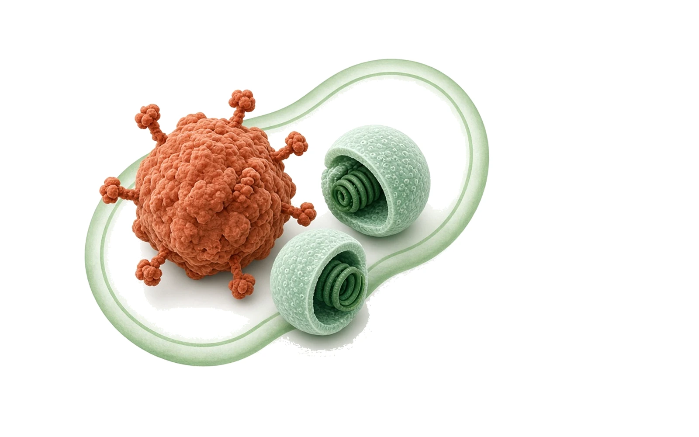
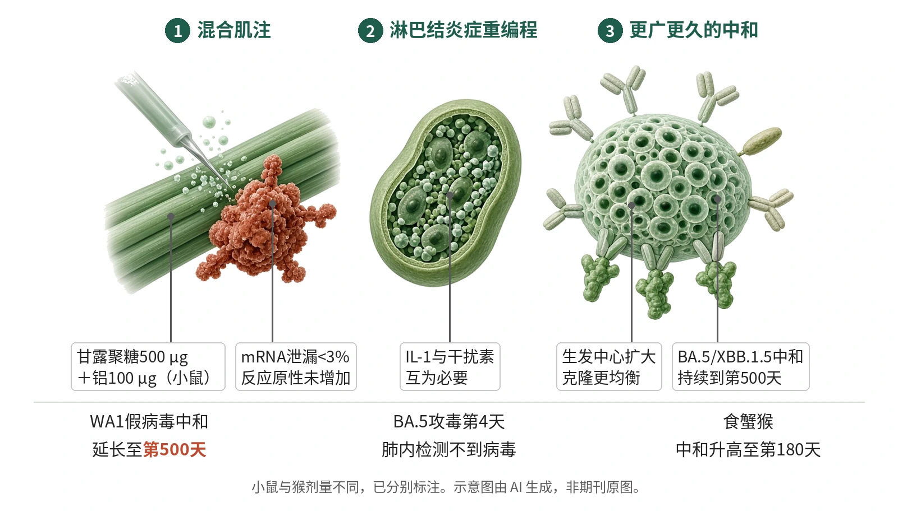

封面示意：赤陶红糖类佐剂颗粒旁有两枚绿色脂质纳米颗粒。图片由 AI 生成，非原文图片。
在小鼠与食蟹猴中，把真菌甘露聚糖与铝佐剂的复合物mannadjuvant混入WA1 mRNA疫苗，可诱导持续到第500天的抗BA.5和XBB.1.5中和抗体，并克服抗原印记。

- 甘露聚糖与铝佐剂形成MA
- 与WA1mRNA混合后肌注
- 引流淋巴结IL-1与干扰素升高
- 生发中心扩大、克隆更均衡
- 广谱中和持续至第500天
示意图概括本文链条：真菌甘露聚糖与氢氧化铝形成的佐剂与新冠mRNA疫苗混合注射，在引流淋巴结放大IL-1与I型干扰素信号，扩大生发中心并使B细胞克隆更均衡，从而延长并拓宽对变异株的中和抗体。示意图由 AI 生成，依据原文结果绘制，非期刊原图，不代表分子比例
研究背景与待解问题
mRNA疫苗由脂质纳米颗粒包裹编码抗原的mRNA，在新冠大流行中已证明有效，但控制其效力的免疫通路仍有争议，而用佐剂调节炎症能否提升mRNA疫苗效力一直少有人问。另一方面，现有mRNA疫苗难以覆盖同一病毒的多个变异株，是作者指出的主要局限。
糖类作为佐剂研究不足。白色念珠菌甘露聚糖可激活C型凝集素受体dectin-2；它与氢氧化铝自发反应形成的复合物被称为mannadjuvant（MA），此前已被报道能增强蛋白疫苗。Jena等在Nature Immunology中检验MA能否增强原始单价mRNA疫苗（WA1mRNA）。
研究设计
C57BL/6J小鼠在第0天（初免）和第14天（加强）肌注WA1mRNA、WA1mRNA+MA或单独MA，并采集血清，另设WA1mRNA+alum与生理盐水对照；小鼠用量为WA1mRNA 1 µg/只，MA由alum 100 µg与甘露聚糖500 µg组成。随访最长至免疫后第500天，读出包括刺突特异IgG、真病毒与假病毒中和、淋巴结TFH与生发中心B细胞、骨髓浆细胞。
另设三类体系：K18-hACE2小鼠在第56天以BA.5攻毒、第4天测肺内病毒；10只3–5岁雄性食蟹猴在第0天和第21天肌注WA1mRNA（30 µg/只）或WA1mRNA+MA（Alhydrogel 1 mg加mannan 5 mg/只）；人外周血单个核细胞体外刺激。中和读出为NT50，即使感染抑制50%的血清滴度；若初始1:30稀释未达50%抑制或回归拟合不佳，则记为检测下限。
核心结果
持续期延长至500天
混合不改变疫苗本身：动态光散射未见粒径变化，24小时内mRNA泄漏不足3%，与是否加入MA无关；免疫后48小时内体温与全身IL-1β、TNF、IL-6在两组间相近。WA1mRNA+MA组抗WA1刺突IgG在第500天前持续高于WA1mRNA或WA1mRNA+alum组，骨髓抗体分泌细胞和长寿浆细胞比例也更高。
广度扩展到变异株
对WA1 SARS-CoV-2的中和延长至第84天，对带D614G的WA1刺突假病毒延长至第500天，而WA1mRNA+alum组没有，说明起作用的是甘露聚糖而非铝。只有WA1mRNA+MA组血清到第500天仍能中和表达BA.5或XBB.1.5刺突的假病毒，并在第35天和第56天中和BA.1与BA.5真病毒。
生发中心与克隆更均衡
WA1mRNA+MA组TFH和生发中心B细胞数量到第84天都高于另两组，第500天回落。单细胞BCR测序显示其克隆优势减弱、分布更均衡：WA1特异克隆的丰富度（q=0）增加37.85个有效克隆（P=0.0280），偏重均匀度的多样性（q=2）增加20.61（P=0.0012），重链与轻链体细胞高频突变也显著增加。
攻毒保护与猴验证
K18-hACE2小鼠第56天以BA.5攻毒，第4天WA1mRNA组肺内病毒滴度低于未免疫组，WA1mRNA+MA组肺内检测不到病毒，肺泡和细支气管周围损伤也显著减轻。食蟹猴中，刺突特异IgG和对WA1、BA.4/BA.5、XBB.1.5假病毒的中和能力显著高于单独WA1mRNA，并持续到免疫后第180天。
克服抗原印记
小鼠先用WA1mRNA两针，再在第56天以XBB.1.5mRNA+MA二次加强：第84天其对XBB.1.5假病毒的中和与全程两次XBB.1.5mRNA免疫相当，并显著提高了对BA.5和WA1刺突假病毒的中和，同时刺突特异生发中心B细胞、记忆B细胞和TFH细胞数量高于其他各组。
机制解读
原文实验证明：引流淋巴结转录组显示，WA1mRNA与WA1mRNA+alum的程序高度重叠，WA1mRNA+MA则落在独立空间：第1天炎症小体与IL-1相关通路上调（Nlrp3、Il1rn、Il1a居前），第3和第7天干扰素驱动的反应仍升高，而另两组第1天上调的基因到第3天已关闭。
功能阻断给出因果证据：IL-1受体抑制剂anakinra或caspase-1抑制剂VX765都阻止了WA1mRNA+MA组抗刺突IgG升高、生发中心B与TFH扩增以及对WA1、BA.5、XBB.1.5假病毒中和的增强，对单独WA1mRNA组影响很小；阻断干扰素亦然。两者互为上游，Il1rn缺失小鼠只用WA1mRNA即达WA1mRNA+MA水平，作者据此认为引流淋巴结内持续的I型干扰素产生与增强的IL-1信号，是MA发挥作用的必要且充分条件。
作者推测：作者推测，持久的生发中心反应让高亲和力抗体遮蔽免疫优势表位、给低亲和力克隆进入的机会，由此解释MA带来的更均衡克隆库与更广中和；他们也写明，MA如何控制炎症小体激活仍有待确定。
局限与不确定
- 机制链条尚未闭合：作者自述MA诱导的干扰素如何影响WA1mRNA应答、MA如何控制炎症小体激活、以及干扰素通路与经典促炎因子的分工，都还需要进一步研究，这些结论目前建立在阻断实验与转录组关联之上。
- 证据层级仍是临床前：保护性终点只有K18-hACE2小鼠在第56天的BA.5攻毒，猴实验只有免疫原性而无攻毒，人源数据限于体外外周血单个核细胞与树突状细胞的细胞因子分泌，没有人体接种数据。
- 规模与外推受限：小鼠每组多为5–14只，猴仅10只雄性、3–5岁，随访到第180天；安全性读出限于反应原性、血液学参数和自身抗原阵列，未涵盖长期安全性。
临床/产业意义
若在更高物种与人体中得到验证，这类靶向dectin-2的真菌糖类佐剂提示了一条升级现有mRNA疫苗的路径：不改抗原序列，只靠混入佐剂来延长抗体持续时间并覆盖逃逸能力强的变异株。
对疫苗研发的另一层意义在于抗原印记：原文中先接种WA1再用含MA的XBB.1.5加强，可把对新变异株的中和拉到与全程新毒株免疫相当，这一思路若经临床验证，可能影响加强针的设计。